Home Page
Overview
The Home page opens with a row of leave balance tiles, three tabs (Apply Leave, My Leaves, My Approvals) and a leave calendar on the right. Managers and approvers also see a Team Approvals tab.
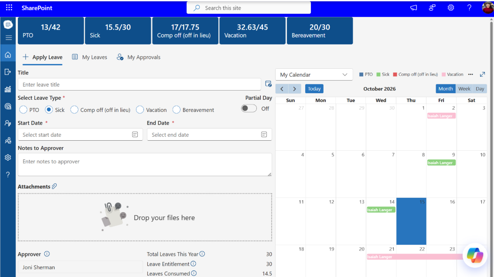
Leave Balance Tiles
One tile per leave type (PTO, Sick, Comp off (off in lieu), Vacation, Bereavement) shows your figure for that type against its total.
Calendar
The calendar on the right shows leave in colour by type: PTO (blue), Sick (green), Comp off (red) and Vacation (pink). Use the arrows and Today to move between dates, and switch the view with Month, Week or Day. The dropdown above the calendar switches between My Calendar and, on the My Approvals tab, Organization's Calendar.
Apply Leave
Step 1. Click + Apply Leave.
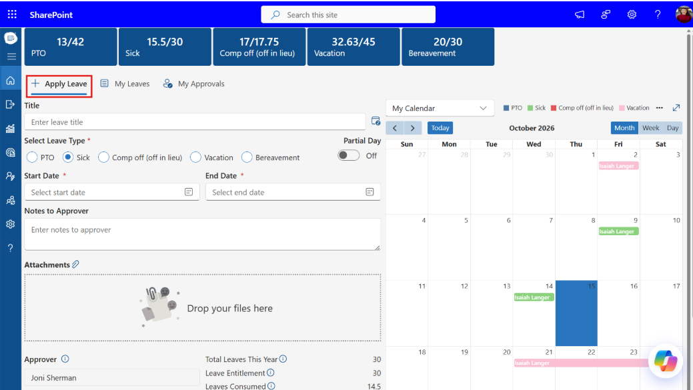
Step 2. Fill in the form:
- Title: A short name for the request.
- Select Leave Type (required): PTO, Sick, Comp off (off in lieu), Vacation or Bereavement.
- Partial Day toggle: Off by default; switch it on for a part-day request.
- Start Date and End Date (required): Pick from the calendar icon.
- Notes to Approver: Add any context for your approver.
- Attachments: Drag and drop files into the box.
- Approver: Shows who the request will go to.
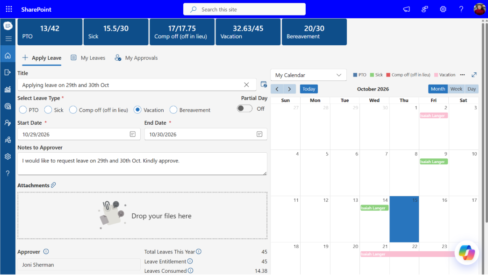
Step 3. Check the summary beside the form. It updates for the selected leave type and shows Total Leaves This Year, Leave Entitlement, Leaves Consumed, Leaves Remaining, No of days and Next Year Used Leave.
Step 4. Click Submit to send the request, or Save Draft to finish it later. Saved drafts appear under My Leaves > Draft.
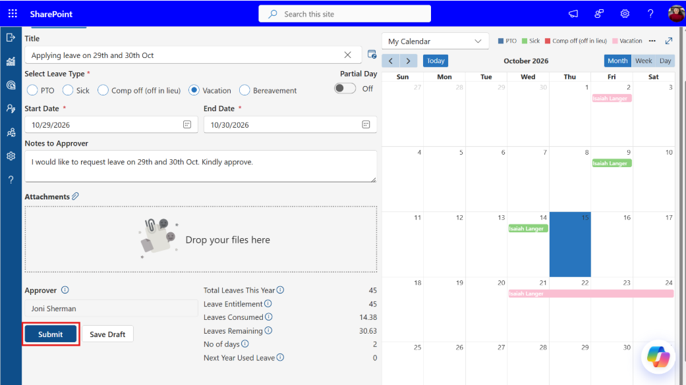
My Leaves
Click My Leaves to see your requests.
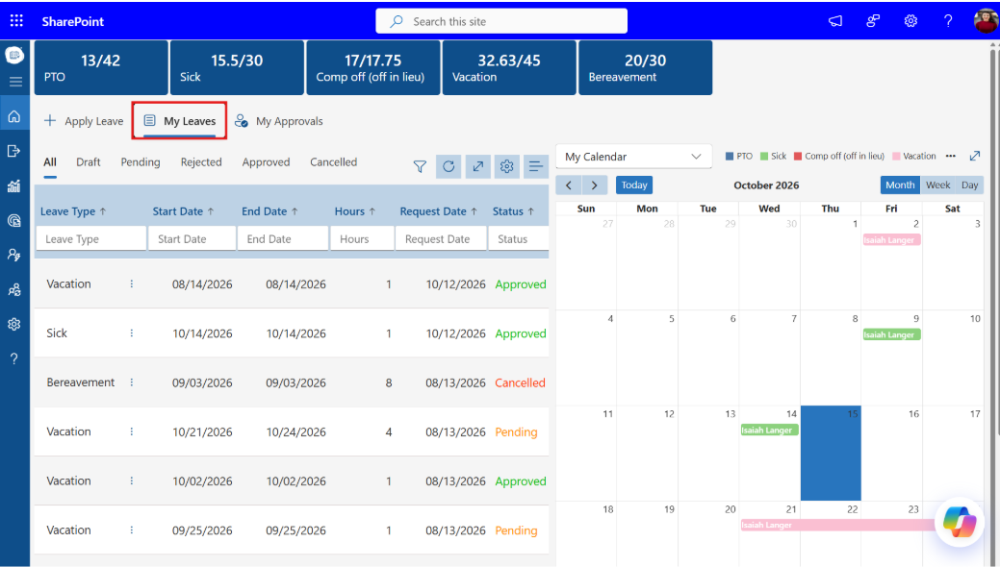
The All tab lists Leave Type, Start Date, End Date, Hours, Request Date and Status. The other tabs list Leave Type, Start Date, End Date, Days, Request Date and Current Approver. Every column can be sorted and has a filter box under its heading.
- All: Status of all your leaves.
- Draft: Saved leaves you can edit and submit later.
- Pending: Leaves waiting for approval.
- Rejected: Leaves that were rejected.
- Approved: Leaves that were approved.
- Cancelled: Leaves that were cancelled.
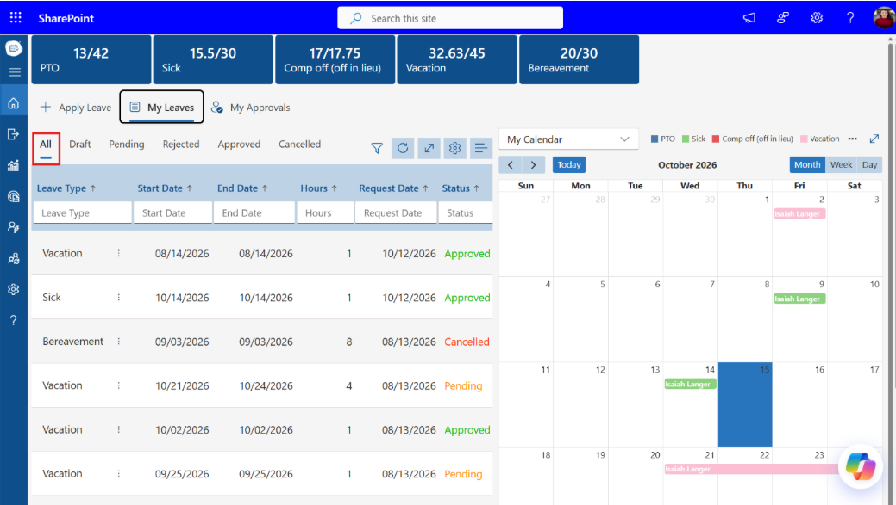
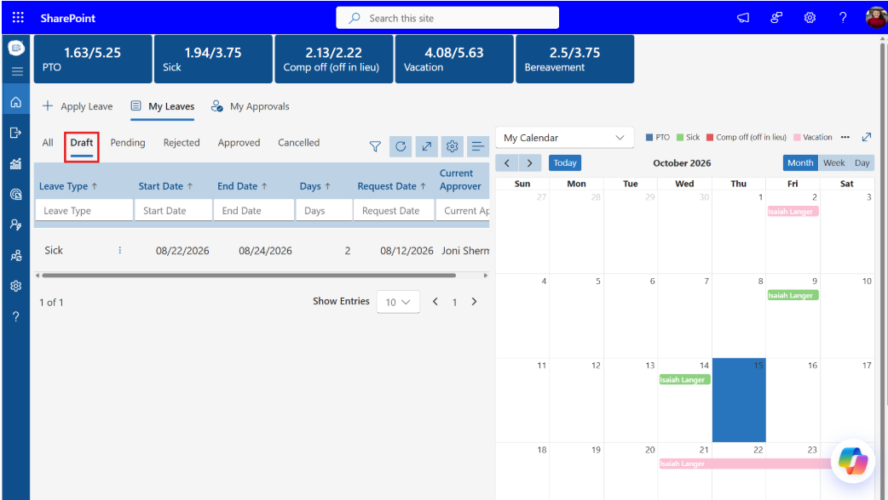
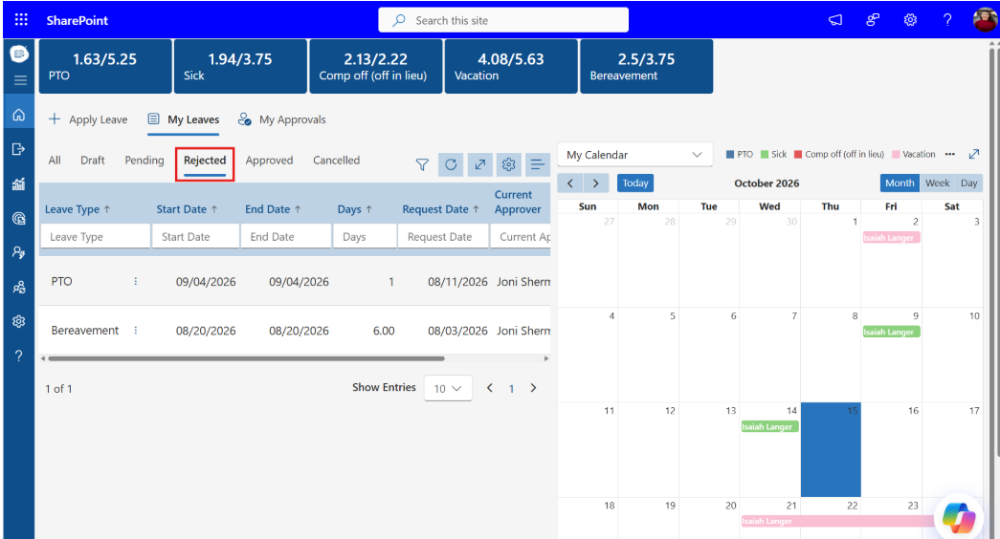
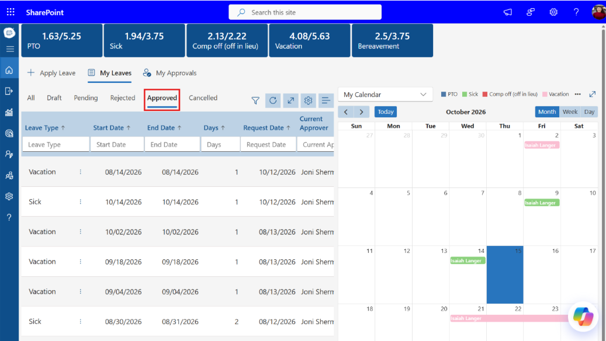
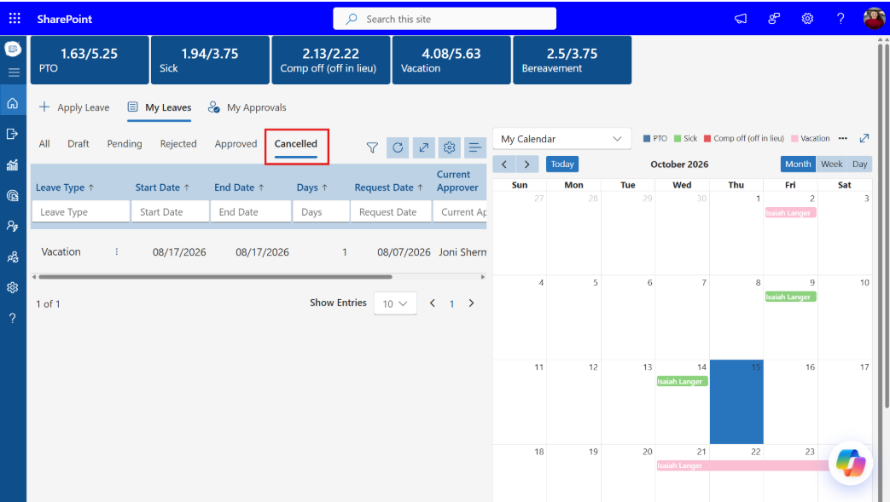
Row Actions
Click the three-dot menu on a row for its actions. On the Pending tab these are View and Send Reminder.
View: Open the request details.
Send Reminder: Remind the approver about the pending request.
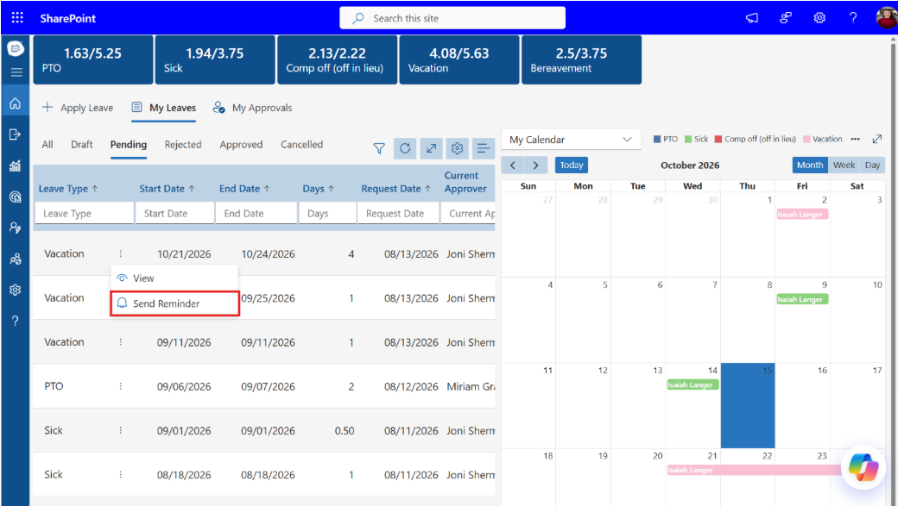
Toolbar Controls
Filter: Filter by Start Date, End Date and Leave Type, then click Apply Filter(s), or Clear Filter(s) to reset.
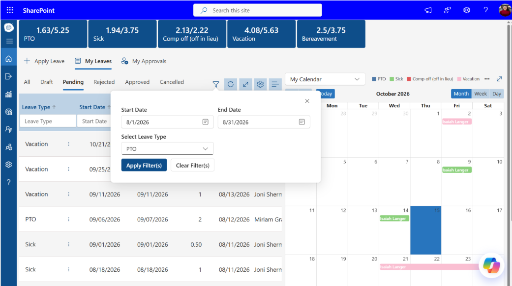
Refresh: Reload the list.
Expand: Open the list in a wider view with all columns visible.
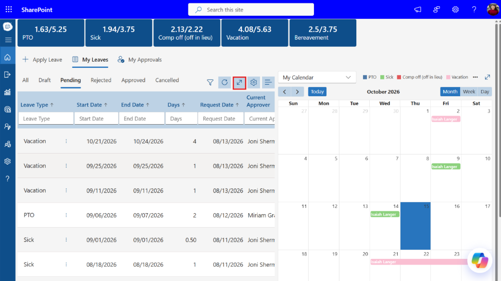
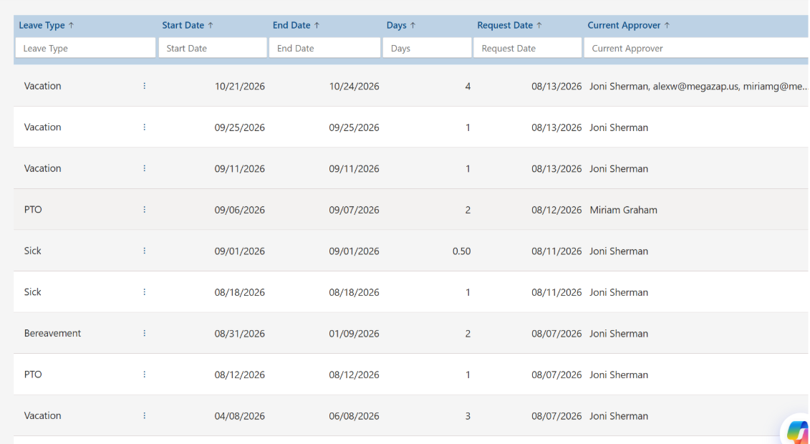
Column Settings: Tick or untick columns (Leave Type, Start Date, End Date, Days, Request Date, Request Type, Current Approver), drag to reorder, then click the save icon.
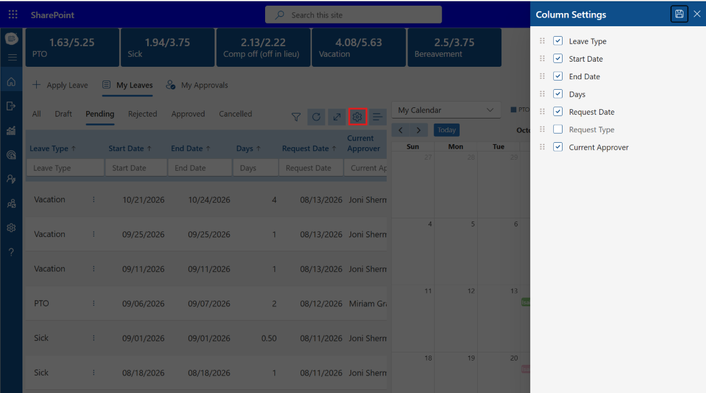
My Approvals
The My Approvals tab replaces the earlier manager action section. It is for admins, managers and approvers who have requests to review.
| Tab | Purpose |
|---|---|
| Approvals | Leave requests waiting for your decision |
| Comp Off Request | Comp off (off in lieu) requests from your employees |
| Cancellations | Cancellation requests from your employees |
| Approved | Requests you approved |
| Rejected | Requests you rejected |
The list shows Employee Name, Leave Type, Start Date, End Date and Days, with a checkbox on each row and a header checkbox to select all. It has the same Filter, Refresh and Expand tools as My Leaves.
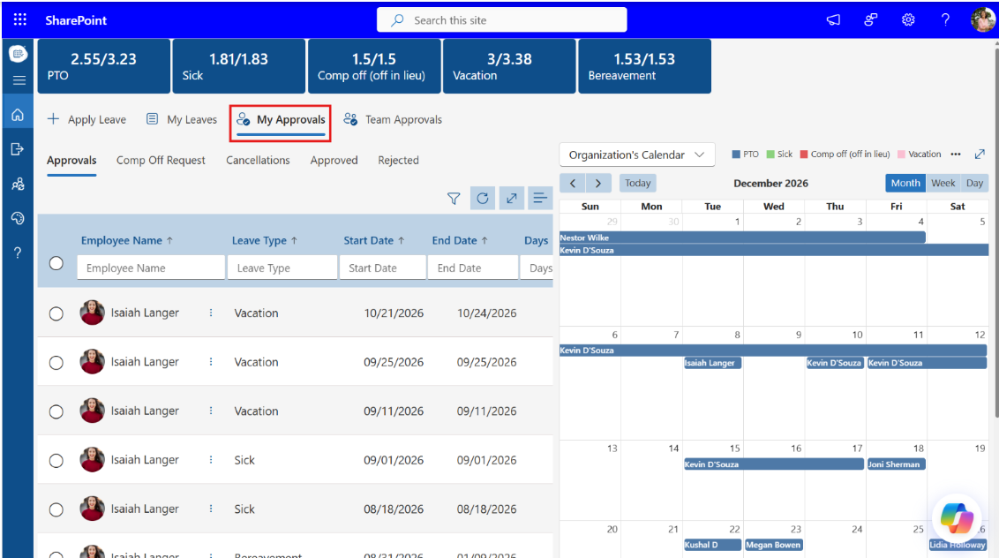
Approving or rejecting a single request: Click the three-dot menu on any employee row to approve or reject individually.
Approving or rejecting several requests at once (bulk approval): Use the checkboxes to select multiple rows, then apply the bulk decision.
Comp Off Request, Cancellations, Approved and Rejected tabs:
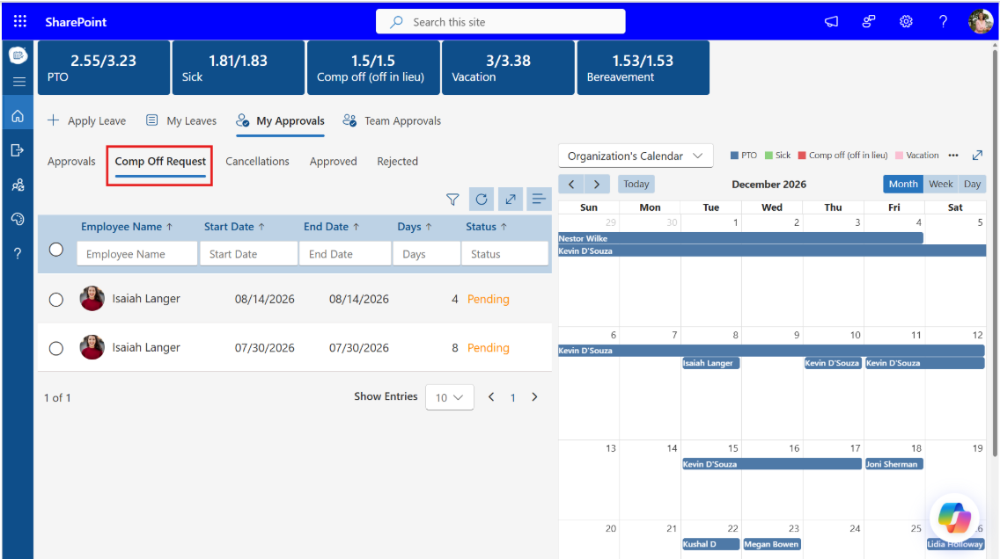
Team Approvals
The Team Approvals tab is visible next to My Approvals for designated managers and supervisors.
Calendar Features & Expanded Views
The calendar on the right of the Home page shows leave in colour, and its dropdown chooses whose leave you see. An expanded view adds filters, totals and a team-by-day grid.
Choose a Calendar
Click the dropdown at the top left of the calendar and pick one of four options.
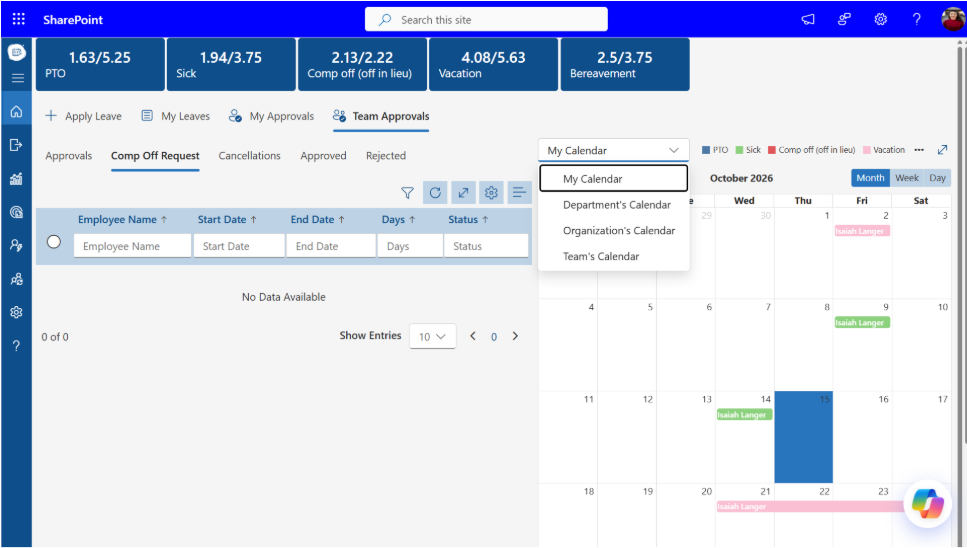
| Calendar | Shows |
|---|---|
| My Calendar | Your own leave |
| Department's Calendar | Leave for the people in your department |
| Team's Calendar | Leave for the people on your team |
| Organization's Calendar | Leave for everyone in the organization |
Team's Calendar shows each person's leave as a bar labelled with their name.
Organization's Calendar shows leave across all teams.
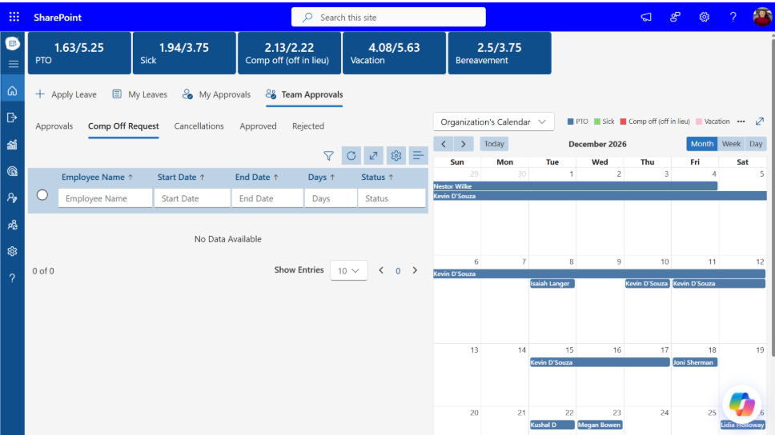
Read the Calendar
- The colours match the legend above the calendar: PTO (blue), Sick (green), Comp off (off in lieu) (red) and Vacation (pink).
- A bar shows the employee's name and runs across every day of the leave.
- The arrows move to the previous or next period, Today returns to the current date, and Month, Week and Day change the view.
- Today's date is highlighted in blue.
Open the Expanded Calendar
Click the expand icon at the top right of the calendar to open it full screen.
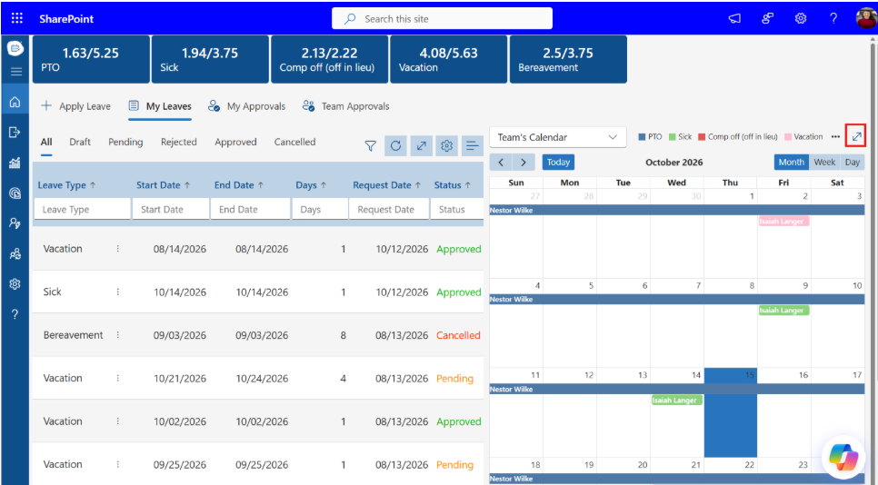
The expanded view has these controls:
- Calendar dropdown (far left): Switch between My, Department's, Team's and Organization's Calendar.
- All Teams, All Departments, All Employees and All Leave Types: Narrow the view to one team, department, employee or leave type.
- Search: Find an employee, department or leave.
- Excel icon: Export the current view to Excel.
- Month selector (for example October 2026): Choose the month to show.
- Summary cards: Employees Away, On PTO, On Sick and On Vacation show how many people are away, in total and by leave type.
- Calendar and Group View: Switch between the calendar layout and the team-by-day grid.
- The arrows and Today move through the days.
- The collapse icon at the top right returns you to the Home page.
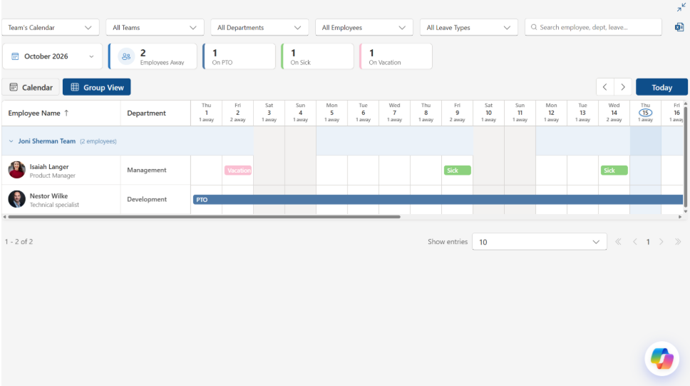
Group View
Group View lists employees by team, with one column per day.
- Each team has a header row with its name and number of employees, for example Joni Sherman Team (2 employees). The arrow beside the name collapses or expands the group.
- Each employee row shows the photo, name, job title and department.
- Leave appears as a coloured bar labelled with the leave type (Vacation, Sick or PTO), in the same colours as the legend.
- Each day header shows how many people are away, for example 2 away. Today is circled and weekends are shaded.
- Show entries sets how many rows appear per page, and the arrows at the bottom move between pages.
Switch Calendars in the Expanded View
Use the dropdown at the top left to change the calendar without leaving the expanded view.
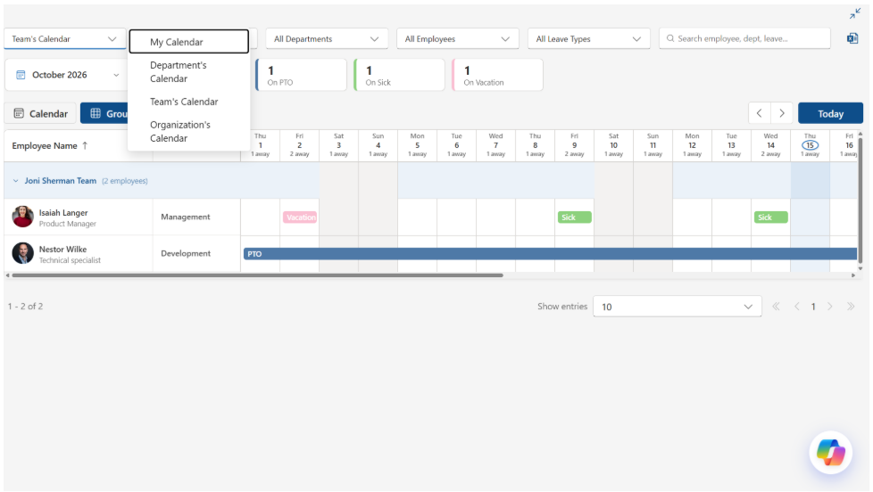
See Who is Away
Select the Employees Away card to see the name, job title and department of each person who is away.
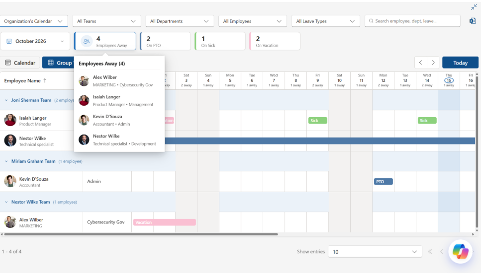